A deux pas du château de Mme de Sévigné, près de Vitré, à 4 km de l'autoroute. Notre exploitation agricole s’est développée dans l’élevage de lapins depuis 1975. Au printemps 2001, nous avons évolué vers un service supplémentaire de notre activité de production, à savoir la commercialisation, via la transformation.
Le samedis matin, Place de la République de 8h30 à 12h30 les Jeudis de l'été, place de la Gare, en juillet août .
Le samedi matin de 8h00 à 12h30. Rue National, sur la place Jean Guéhenno, au pied du Beffroy, stand au bout des arcades.
Le lapin est une viande qui allie plaisir et santé. C'est une viande peu calorique, riche en protéines,regorgeant de vitamines notamment les vitamines B3 et B12, et en "bon" lipides permettant d'augmenter l'apport d'oméga 3. Redécouvrez une viande savoureuse, tendre et très digeste. Des idées recettes sont à votre disposition, c'est facile et à toute saison. Pour les professionnels, nous assurons les livraisons sur un rayon de 50 km. Nous expédions sur la région parisienne et la France entière. Diverses prestations sont possibles (abattage à façon, etc...).
Les bâtiments et le plan d'épandage nous permettent d'être aux normes dans le cadre du Programme de Maîtrise des Pollutions d'Origines Animales. L'environnement est pris en compte dans notre réflexion sur la conduite de l'exploitation, que ce soit pour l'élevage ou les cultures.
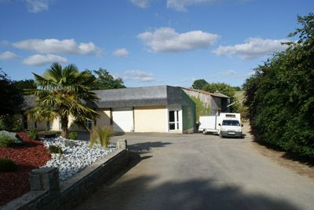
Génétique : Nous travaillons avec la souche Hyla, cela nous permet d'obtenir un lapin avec une bonne conformation. La reproduction se fait par insémination artificielle pour 2 raisons majeures :
Les lapins sevrés sont rationnés jusqu’à 55 jours d’âge. Ensuite on utilise un aliment finition jusqu’à 90-100 jours. Au départ, ils sont disposés par 2, pour optimiser le processus de rationnement. Nous les finissons un par un, de façon à homogénéiser le lot avant la vente. Le lapin idéal pour l’abattage atteint 2,7 kg environ. Chaque lapin est trié manuellement à partir de 90 jours, ceci nous permet d’obtenir une carcasse pesant 1,5 kg minimum..
Nous travaillons avec des fabricants qui ont un savoir faire spécifique à la production cunicole La nourriture est sous forme de granulés . ( ils sont garantis sans OGM et sans farines animales).. Ceux-ci sont composés à 100% de végétaux, minéraux et vitamines. Les ingrédients principaux sont la luzerne, tournesol, betterave et céréales. Tous les ingrédients sont sélectionnés suivant des critères très stricts, de façon à fournir une régularité dans la fabrication. Le lapin ayant une double digestion, la qualité des matières premières est déterminante durant la vie du lapin. Les besoins du lapin évoluent tout au long de sa croissance. Nous devons fournir ce qu’il faut au bon moment, de façon à optimiser cette croissance. C’est pour cela que l’on peut observer des variations dans les proportions de chaque composant du granulé. Nous accordons une grande importance à la proportion en luzerne. C’est un composant essentiel pour un bon fonctionnement du système digestif. De plus la luzerne est riche en acides gras poly-insaturés oméga 3 et oméga 6, éléments bénéfiques pour la santé humaine.
 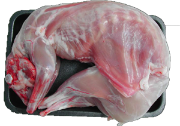
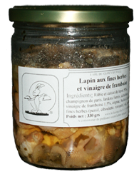
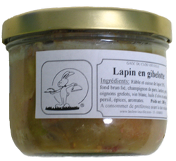
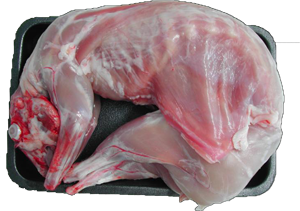
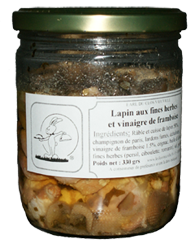
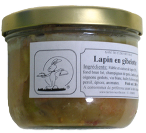
 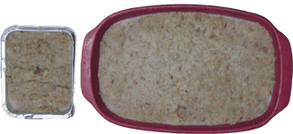
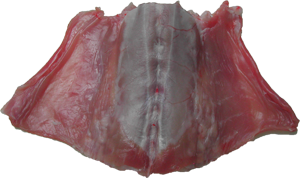
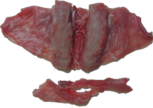
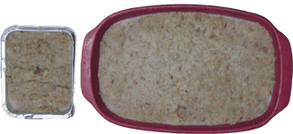
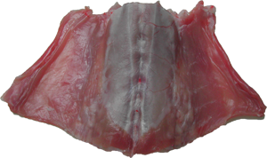
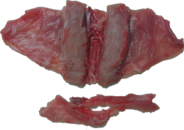
 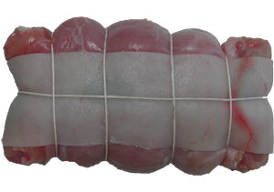
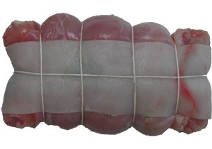
Pour 4 Personnes :
Mélangez tous les ingrédients et badigeonnez-en la viande.
Laisser mariner 3heures minimum
Mélangez tous les ingrédients et badigeonnez-en la viande.
Laisser mariner 3heures minimum
Déposer des ciseaux sur votre table pour permettre à vos convives d'ouvrir eux-mêmes les papillotes encore fermée (la saveur des aliments sera alors conservée jusqu'à son ouverture) et de profiter pleinement des arômes qui s'en dégageront à l'ouverture. Attention, la vapeur s'échappant des papillotes est très chaude !
Outre la cuisse, vous pouvez également cuire en papillote le râble et la gigolette (épaules muscles et côtes) de lapin